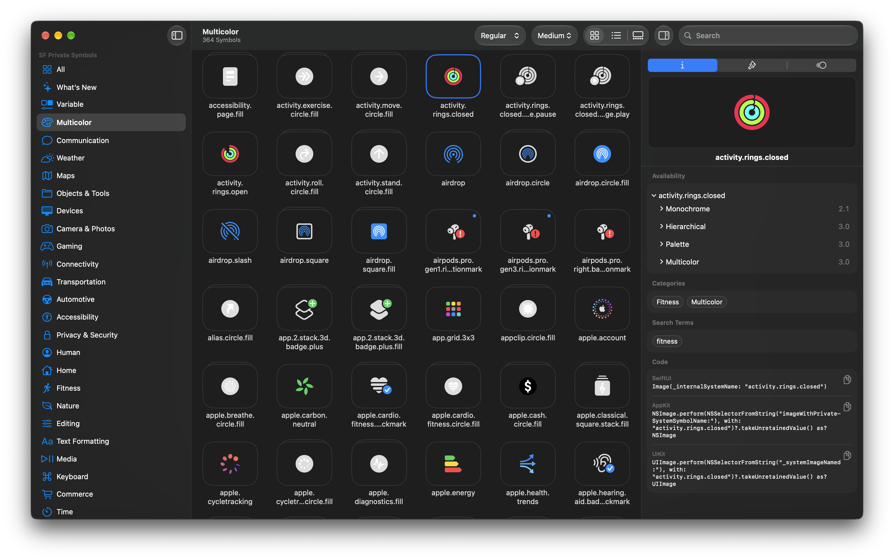
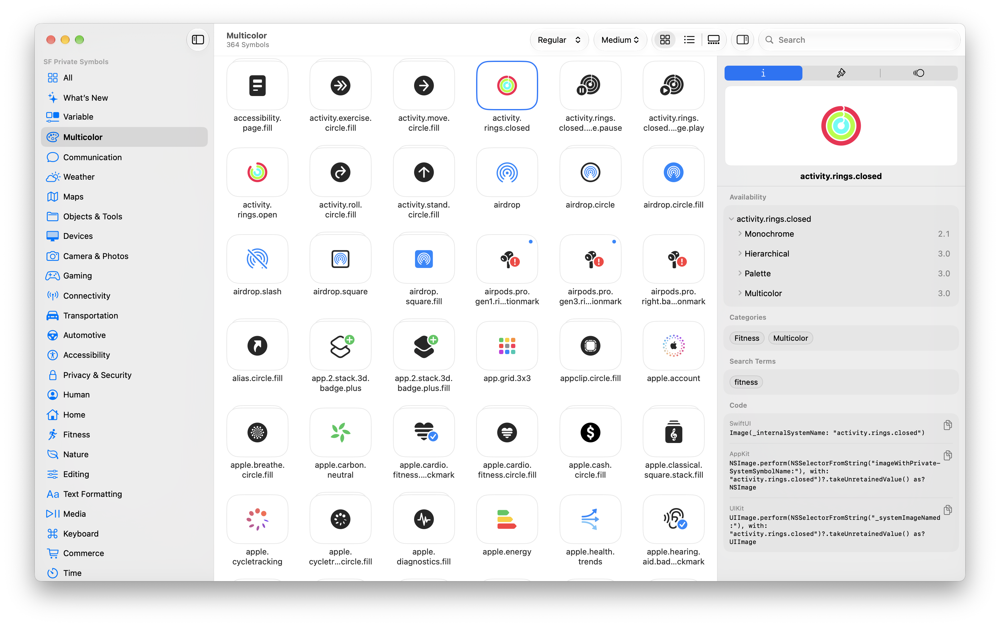

The SF Symbols Apple keeps strictly for itself. ✨
It’s not just a symbol browser — it’s a window into the 1,700+ private SF Symbols hiding in CoreGlyphsPrivate.bundle. AirPods, Apple Watch, Apple TV, accessibility features and more — all in a Mac app that looks and works like SF Symbols.
macOS 26+ 100% Free ✨ Open Source

Trusted by teams who have absolutely never heard of us
Everything SF Symbols does — for the symbols it won’t show.
It’s not just a grid of glyphs — it’s a fully featured symbol browser, inspector and exporter.
Browse
Every private symbol in grid, list and gallery views — organized into SF Symbols’ categories, with search by name, alias and search term.
⌘F → “airpods” → instant, frictionless, delightful results — the way search was always meant to feel.
Inspect
The SF Symbols version and OS releases that introduced each symbol, its aliases, categories, search terms, fill and localized variants, and usage restrictions.
Preview
Any weight and scale in monochrome, hierarchical, palette or multicolor — with gradients, variable values, and custom colors and backgrounds.
Animate ✨ MOST VIBES
Every SF Symbols effect — bounce, pulse, variable color, scale, wiggle, rotate, breathe, replace, draw on and off, and more. It’s not just motion — it’s motion that sparks joy.
Copy
A symbol as SVG or PNG, its name, or ready-to-use SwiftUI, AppKit and UIKit code — straight to your clipboard.
Export
Symbol templates for designers, or for Xcode asset catalogs — seamlessly bridging design and engineering.
Looks like SF Symbols. Works like SF Symbols.
Because a native Mac app should feel native — not just in dark mode, but in light mode too.

Why does this exist?
Apple’s SF Symbols app lists the thousands of public symbols. But macOS also ships over 1,700 private ones — used throughout Apple’s own apps — in a system bundle that no app shows you.
SF Private Symbols does. Here’s the thing — that’s it. That’s the pitch.
Slop compliance
Loved by people who definitely exist.
Testimonials auto-generated by the design framework. None of these people have used the app — or, for that matter, been born.
Simple, transparent pricing.
Hobbyist
- ✅ All 1,700+ private symbols
- ✅ Grid, list & gallery views
- ✅ Every rendering mode
Pro
- ✅ Everything in Hobbyist
- ✅ Every SF Symbols animation
- ✅ Copy as SVG, PNG, SwiftUI, AppKit & UIKit
- ✅ The same app, but you feel more professional
Enterprise
- ✅ Everything in Pro
- ✅ Export templates for designers & Xcode
- ✅ A “Contact Sales” button that opens GitHub
Up and running in one Xcode build.
Requires macOS 26 or later. Open the project in Xcode and build — the app is installed into /Applications/SF Private Symbols.app.
$ git clone https://github.com/LeoNatan/SFPrivateSymbols.git $ cd SFPrivateSymbols $ open SFPrivateSymbols.xcodeproj # ⌘B — and that’s it. No npm. No Docker. No Series A.
Ask AI which private symbol you need
Powered by zero models. The app’s actual search is far more useful.
Not enough? Dial it up.